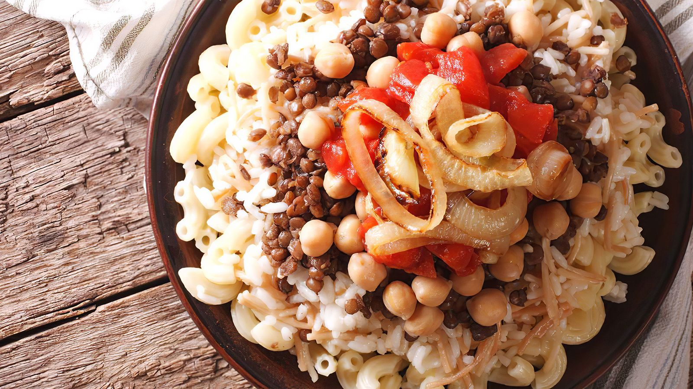

Ingredients
- 1 lb (450g) Fettuccine Pasta
- 4 tbsp Unsalted Butter
- 1 cup Heavy Cream
- 2 cups Freshly Grated Parmesan Cheese
- 2 Garlic Cloves, minced
- Salt to taste
- Black Pepper to taste
- Fresh Parsley for garnish
Cooking Steps
- Bring a large pot of salted water to a boil.
- Cook the fettuccine until al dente according to package instructions.
- Reserve 1 cup of pasta water and drain the pasta.
- Melt butter in a large skillet over medium heat.
- Add minced garlic and sauté for about 30 seconds.
- Pour in heavy cream and simmer for 2–3 minutes.
- Gradually stir in Parmesan cheese until smooth.
- Add cooked pasta and toss until evenly coated.
- Add reserved pasta water if needed to adjust consistency.
- Season with salt and pepper, then serve immediately.
About This Dish
Fettuccine Alfredo is one of the most popular comfort-food pasta dishes. Originating from Italy and later adapted in America, it is famous for its rich, creamy sauce made with butter, Parmesan cheese, and cream. It is perfect for family dinners, special occasions, or whenever you're craving a satisfying homemade meal.